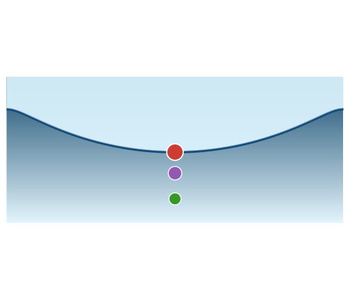

InterfacialWaves.jl

InterfacialWaves.jl is a Julia package for computing exact steady travelling-wave solutions and their linear stability. The package is organized around the wave class being solved:
- Travelling Waves: pure-gravity, gravity–capillary, viscous gravity–capillary/ wind-forced, and two-fluid interfacial waves;
- Standing Waves: axisymmetric standing waves in a cylindrical basin via HOSE boundary-integral methods (
AxiStandingWavessubmodule); - Stability: linear stability problems built from a computed base state.
The documentation distinguishes between implemented methods and planned work. Methods whose base-state or stability implementation is not yet available are listed under Progress.
Citing this package
If you use InterfacialWaves.jl in your research, please cite:
@misc{InterfacialWaves,
author = {Yewale, Nikhil and Dasgupta, Ratul},
title = {{InterfacialWaves.jl}: A {Julia} Package for Nonlinear Interfacial Waves},
year = {2026},
version = {0.1.0},
url = {https://github.com/yewalenikhil65/InterfacialWaves.jl},
note = {Julia package, v0.1.0},
}Quick start: pure-gravity waves
using InterfacialWaves
prob = GravityProblem(128; ak=0.20)
sol = solve(prob, LH())
sol.c # phase speed
sol.ak # final steepness
sol.a # Fourier coefficients in the a₀/2 convention129-element Vector{Float64}:
-0.5395675710720229
0.18795673855930745
0.03609166168249506
0.010421909306036757
0.0035699529991651117
0.0013440456957736404
0.0005373562136278045
0.00022396585915974784
9.624099237152389e-5
4.2333360960652504e-5
⋮
6.673678857331351e-38
3.456353764901241e-38
1.7902371430915066e-38
9.273149796627773e-39
4.802967228996239e-39
2.4860985014993003e-39
1.283015344624272e-39
6.530161124261583e-40
3.0793013718273128e-40The pure-gravity tutorial develops the Longuet–Higgins calculation first, then the collocation calculation, and finally compares their phase-speed curves:
Documentation map
Citing this package
If you use InterfacialWaves.jl in your research, please cite:
@misc{InterfacialWaves,
author = {Yewale, Nikhil and Dasgupta, Ratul},
title = {{InterfacialWaves.jl}: A {Julia} Package for Nonlinear Interfacial Waves},
year = {2026},
version = {0.1.0},
url = {https://github.com/yewalenikhil65/InterfacialWaves.jl},
note = {Julia package, v0.1.0},
}